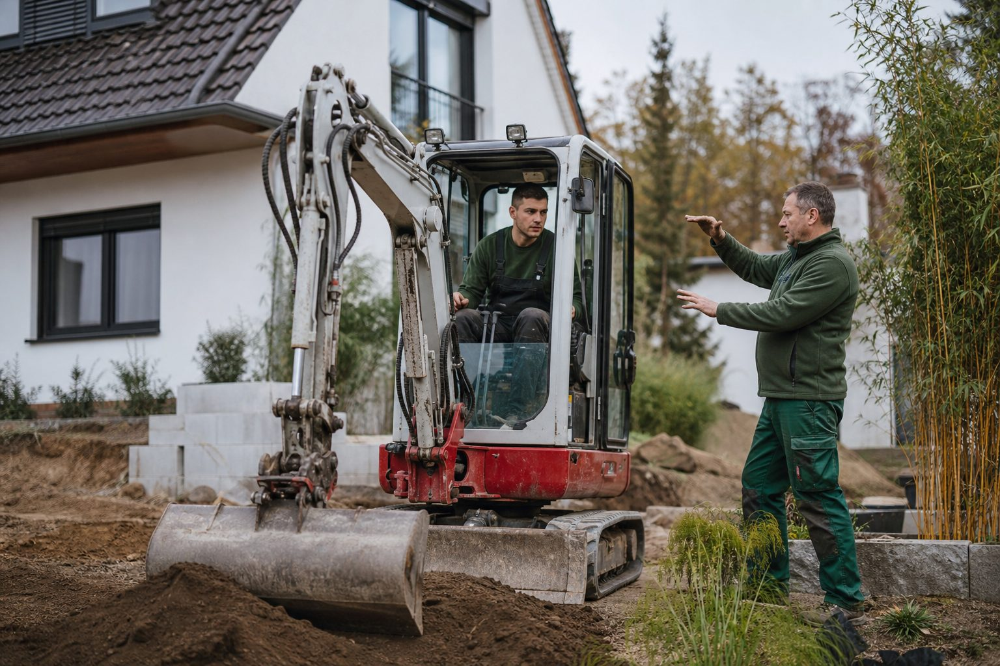
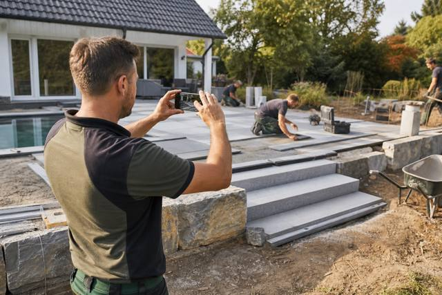
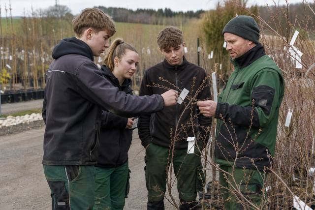
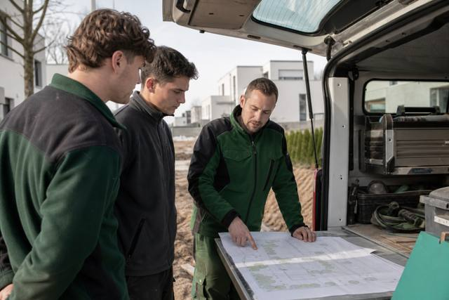

Baggerschein: Was der DGUV Grundsatz 301-005 von Betrieben verlangt – und was nicht
Einen amtlichen Baggerführerschein gibt es nicht. Trotzdem darf niemand ohne Qualifizierung und Beauftragung auf den Sitz. Was der Grundsatz der Unfallversicherer vorschreibt, wer ausbilden darf und was auf der Straße zusätzlich gilt.

Der Begriff hält sich hartnäckig: „Baggerschein“. Bewerber schreiben ihn in den Lebenslauf, Betriebe fragen im Vorstellungsgespräch danach, Bildungsträger drucken ihn auf Zertifikate. Rechtlich gibt es ihn nicht. Was es gibt, ist eine Pflicht des Unternehmers: Wer eine Erdbaumaschine führt, muss dafür qualifiziert, unterwiesen und beauftragt sein. Wie das aussieht, beschreibt seit Januar 2022 der DGUV Grundsatz 301-005.
Drei Schritte, keine Urkunde
Der Grundsatz gilt für Hydraulikbagger, Radlader und Baggerlader – also für genau die Maschinen, die auf GaLaBau-Baustellen täglich laufen. Er konkretisiert, was die Betriebssicherheitsverordnung ohnehin verlangt: Beschäftigte dürfen Arbeitsmittel nur benutzen, wenn sie dafür ausreichend qualifiziert sind, und für Arbeitsmittel mit besonderen Gefährdungen braucht es eine ausdrückliche Beauftragung durch den Arbeitgeber.
Qualifizierung. Der Fahrer lernt Aufbau und Funktion der Maschine, Standsicherheit, Lastdiagramme, Anbaugeräte, Verkehrssicherung, Arbeiten im Bereich von Leitungen und Böschungen. Der Grundsatz nennt als Richtwert mindestens zehn Unterrichtseinheiten Theorie, dazu die praktische Ausbildung an der Maschine. Wer bereits Erfahrung hat, kann kürzer qualifiziert werden – das muss der Betrieb aber begründen und dokumentieren können.
Unterweisung. Sie ist maschinen- und baustellenbezogen: Welche Maschine, welche Anbaugeräte, welche Besonderheiten auf dieser Baustelle. Die Unterweisung wird jährlich wiederholt und schriftlich festgehalten.
Beauftragung. Erst mit der Beauftragung darf der Mitarbeiter die Maschine selbstständig führen. Sie ist personen- und maschinenbezogen und sollte schriftlich erfolgen – der Grundsatz stellt dafür ein Muster bereit. Ein Vordruck reicht: Name, Maschinentyp, Datum, Unterschrift beider Seiten.
Was ein Zertifikat wert ist
Das Zertifikat eines Lehrgangs belegt die Qualifizierung – nicht mehr. Die Beauftragung erteilt der jeweilige Betrieb. Wechselt der Fahrer den Arbeitgeber, muss der neue Betrieb ihn erneut unterweisen und beauftragen. Wer einen Bewerber mit „Baggerschein“ einstellt, hat also den ersten Schritt erledigt, nicht den dritten.
Umgekehrt gilt: Ein Facharbeiter, der seit zwanzig Jahren baggert, aber nie einen Lehrgang besucht hat, ist nicht automatisch unqualifiziert. Der Betrieb kann seine Befähigung feststellen und dokumentieren. Was nicht geht, ist schweigen: Passiert ein Unfall und der Betrieb kann weder Qualifizierung noch Beauftragung belegen, wird die Berufsgenossenschaft Regress prüfen.
Mindestalter und Straße
Das selbstständige Führen von Erdbaumaschinen ist Beschäftigten ab 18 Jahren vorbehalten; Auszubildende dürfen unter Aufsicht früher üben, wenn das Ausbildungsziel es erfordert. Auf öffentlichen Straßen kommt das Fahrerlaubnisrecht dazu: Für selbstfahrende Arbeitsmaschinen bis 25 km/h reicht die Klasse L, darüber entscheidet das zulässige Gesamtgewicht über B, C1 oder C. Wer den Minibagger auf dem Anhänger zur Baustelle bringt, braucht je nach Gespann B96 oder BE.
Für die Personalplanung
Betriebe, die Maschinenführer suchen, konkurrieren mit dem Tiefbau und dem Straßenbau. Wer die Qualifizierung selbst anbietet – als festen Baustein im ersten Jahr nach der Ausbildung – hat ein Argument, das im Vorstellungsgespräch zählt. Und er hat es dokumentiert, wenn es darauf ankommt.
Kommentare
Noch keine Kommentare. Schreiben Sie den ersten.
Mehr aus Karriere & Weiterbildung
Zum Ressort
Werkzeugkasten für Bauleiter: Sechs digitale Helfer, die den Tag kürzer machen
Aufmaß, Bautagebuch, Fotodokumentation, Zeiterfassung, Wetter, Material – für jede Aufgabe gibt es Apps. Welche Kategorien sich im Alltag von GaLaBau-Bauleitern bewähren, worauf es bei der Auswahl ankommt und warum weniger oft mehr ist.

50 Pflanzen in 30 Minuten: Wie die Pflanzenkenntnis-Prüfung läuft – und wie Betriebe ihre Azubis vorbereiten
Pflanzenkenntnisse sind das Prüfungsfach, an dem Landschaftsgärtner am häufigsten scheitern. Was die Pflanzenliste verlangt, warum der botanische Name zählt und wie fünf Minuten pro Woche den Unterschied machen.

Vom Landschaftsgärtner zum Bauleiter: Drei Wege, ein Ziel
Bauleiter sind laut Trendbarometer der Messe die knappste Position im GaLaBau. Meister, Techniker oder Studium – welcher Weg zu wem passt, was er kostet und wie das Aufstiegs-BAföG hilft.